Chapitre 2 Description
All chapters start with a first-level heading followed by your chapter title, like the line above. There should be only one first-level heading (#) per .Rmd file.
2.2 Notation
On note une série temporelle par : \[\left\{x_t \right\}_{t \in T}\] Où :
\(t_1, t_2, ..., t_n\) sont les \(n\) instants d’observation du phénomène, ca peut etre le jour, le mois, l’année …
\(T\) est l’ensemble ordonné des instants, i.e : \(T = \left\{t_1, t_2, ..., t_n \right\}\),
\(x_{t_i}\) est la valeur du phénomène observé à l’instant \(t_i\), avec \(1 \le i \le n\),
On peut aussi la noter par l’ensemble des couples ci-après : \[(t_i, x_i)_{1 \le i \le n}\] Où :
- la première composante l’instant d’observation \(t_i\),
- la deuxième composante est la valeur du phénomène \(x\) observée à l’instant \(t_i\).
ou encore \(x_t\).
La serie \(x_t\) est la realisation d’un processus aléatoire \(X_t\). Les \(X_t\) sont des variables aléatoires (v.a), et \(x_t\) est la valeur prise par \(X_t\) à l’instant \(t\). Ces v.a à des instants differents sont normalement corrélées.
2.3 Exemple
Le chiffre d’affaire mensuel (en million de dollars) du service Voix mobile en République Démocratique du Congo pour l’ensemble des opérateurs de téléphonie (Fig. 1.1). La croissance de l’activité a brusquement changé suite à l’inflation du marché.
Le nombre de minutes consommées1 par jour en 2021 par l’ensemble des clients ayant passé un appel vocal (Fig. 1.2). La consommation baisse les jours week-ends, suite du fait de l’arrêt des activités économiques.
Le nombre de Terabyte consommé par l’ensemble des clients ayant naviguer sur internet (Fig. 1.3). La croissance est exponentielle, favorisée plus par l’augmentation d’une part du nombre des smartphones et de la baisse du prix de service internet mobile sur le marché congolais.
Le nombre de clients actifs sur une periode de 90 jours de l’operateur Airtel (Fig. 1.4).
On simule une marche aléatoire avec les fonctions R cumsum() et rnorm() (Fig. 1.6).
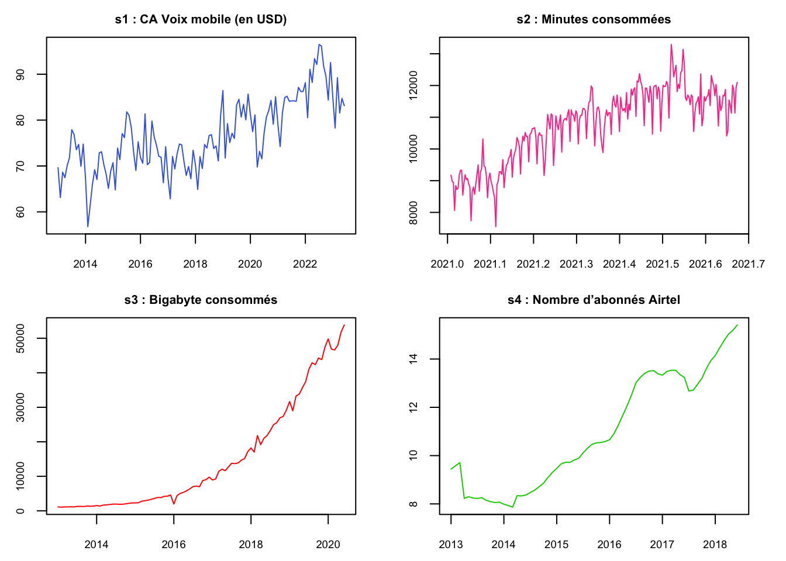
par(mfrow = c(2,2), oma = c(0, 0, 0, 0), mar = c(2.5, 2.5, 2,2), cex.main = 0.8, cex.lab = 0.7, cex.axis = 0.7)
plot(s4, col = "green3", xlab = "", main = "s4 : Nombre d’abonnés Airtel")
plot(s6, col = "grey", xlab = "", main = "s6 : Marche aléatoire")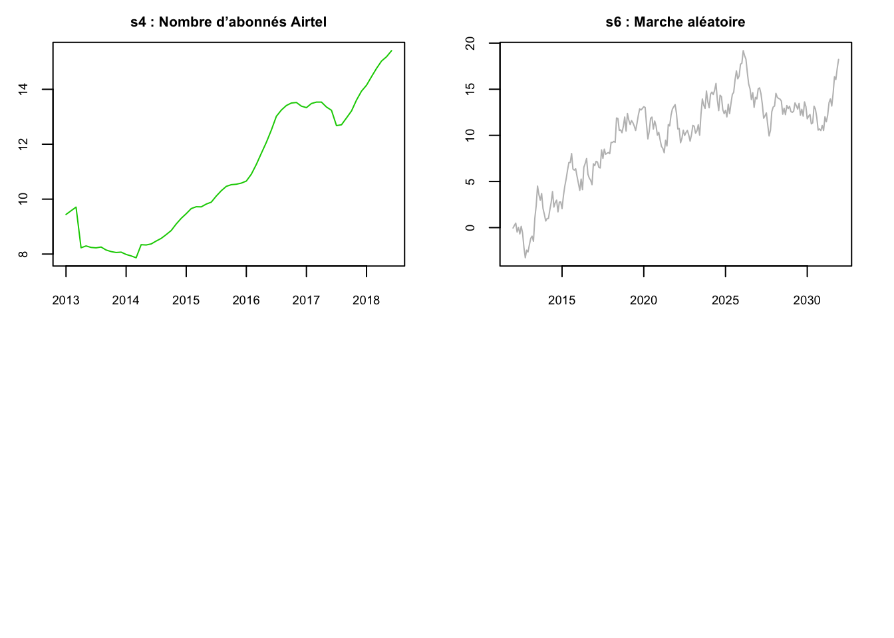
2.4 Statistiques descriptives usuelles
Soit \(x_t\) une série temporelle avec \(t \in T\),
2.4.1 Les statistiques de tendance centrale
- La moyenne empirique
La moyenne empirique de la série est donnée par : \[\overline{x} = \frac{1}{n} \sum_{t=1}^{n} x_{t}\]
2.4.2 Les statistiques de dispersion
- La variance empirique
La variance empirique est donnée par : \[\sigma^2 = \frac{1}{n} \sum_{t=1}^{n} (x_t - \overline{x})^2 \]
L’ecart-type est definit par la racine carrée de la variance empirique : \(\sigma\).
- Le coefficient de variation
Le coefficient de variation est donné par : \[cv = \frac{\sigma}{\overline{x}}\] Permet de determiner l’homogénéité ou la dispersion et est exprimé en pourcentage.
- Pour \(cv<15%\), on dit que la série est homogène.
- Pour \(cv>15%\), on dit que les valeurs de la série sont relativement dispersées.
## [1] 10.23## [1] 10.67## [1] 105.46## [1] 21.47Ainsi, on peut observer qu’il y a de forte dispersion avec la \(s3\) et \(s4\) contrairement aux observations de série \(s1\) et \(s2\) qui elles sont homogènes.
2.4.3 Statistiques de dépendance
Celles qui renseignent sur la dépendance entre les observations de la série \(x_t\) :
- L’auto_covariance
L’auto-covariance d’ordre \(h\) de la série est donnée par : \[\hat\sigma(h) = \frac{1}{n-h} \sum_{t=1}^{n-h} (x_{t} - \overline{x}) (x_{t+h} - \overline{x})\]
Avec \(h \in N^*\) et \(h < n\). Dans le cas où \(h=0\), c’est-à-dire \(\hat\sigma(0)\), on a la variance empirique \(\sigma^2\).
- L’auto-correlation
L’auto-correlation de la série est donnée par : \[\hat\gamma(h) = \frac{\hat\sigma(h)}{\hat\sigma(0)}\]
2.4.4 Les statistiques des formes
La loi normale se caractérise par un coefficient d’asymétrie et un coefficient d’aplatissement nuls. Ainsi les calculs de ces coefficients peuvent nous aider à avoir une idée sur la normalité.
- Les coefficients d’aplatissement
Le coefficient d’aplatissemnt (ou Kurtosis) permet de mesurer l’aplatissement de la distribution de la série. On s’en sert aussi pour vérifier si une distribution est normale. Le coefficient est donné par : \[P = \frac{n(n+1)}{(n-1)(n-2)(n-3)} \sum_{t=1}^n \left( \frac{x_t - \overline{x}}{\sigma} \right)^4 - \frac{3(n-1)^2}{(n-2)(n-3)} \]
ou \[K = \frac{1}{n\sigma^4} \sum_{t=1}^n (x_t - \overline{x})^4 \]
Pour : - Si \(K=3\), la distribution est normale, - Si \(K>3\), la distribution est plus applatie, c’est-à-dire, une distribution relativement hétérogène, avec beaucoup de valeurs éloignées de la moyenne. - Si \(K<3\), la distribution est moins applatie, c’est-à-dire, il y a peu de variations dans les valeurs observées, une distribution relativement homogène, avec beaucoup de valeurs égales ou proches de la moyenne.
## [1] 2.665041## [1] 2.419901## [1] 2.753559## [1] 1.619768## [1] 2.990772- Le coefficients d’asymétrie
Le coefficient d’asymetrie (de Fisher) est donner par : \[A = \frac{n}{(n-1)(n-2)} \sum_{t=1}^n \left( \frac{x_t - \overline{x}}{\sigma} \right) ^3\]
ou \[F = \frac{1}{n\sigma^3} \sum_{t=1}^n (x_t - \mu)^3\]
L’interprétation de ces coefficients est directe :
- Si le coefficient est nul, la distribution est symétrique
- Si le coefficient est négatif, la distribution est déformée à gauche de la médiane (sur-représentation de valeurs faibles, à gauche)
- Si le coefficient est positif, la distribution est déformée à droite de la médiane (sur-représentation de valeurs fortes, à droite)
## [1] 0.307306## [1] -0.4777813## [1] 1.035407## [1] 0.25069## [1] -0.82007212.5 Représentation graphique
2.5.1 Le chronogramme
Le chronogramme (ou time plot) est la représentation graphique d’une série temporelle. Les figures de l’exemple sont des chronogrammes. Sous R on peut utiliser d’autres paramètres pour ajouter les éléments dans les différentes figures.
2.5.2 L’histogramme
La représentation qui permet d’avoir une idée sur la distribution des valeurs de la série \(x_t\).
## Warning in plot.window(xlim, ylim, "", ...): "min" is not a graphical parameter## Warning in title(main = main, sub = sub, xlab = xlab, ylab = ylab, ...): "min"
## is not a graphical parameter## Warning in axis(1, ...): "min" is not a graphical parameter## Warning in axis(2, at = yt, ...): "min" is not a graphical parameter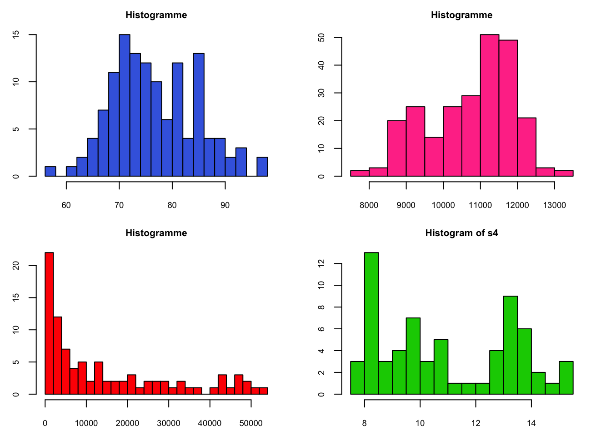
2.5.3 Le diagramme retardé
Le diagramme retardé (ou Lagplot) est une représentation qui permet de comprendre la dépendance des observations de la série \(x_t\) obtenu avec la fonction lagplot().
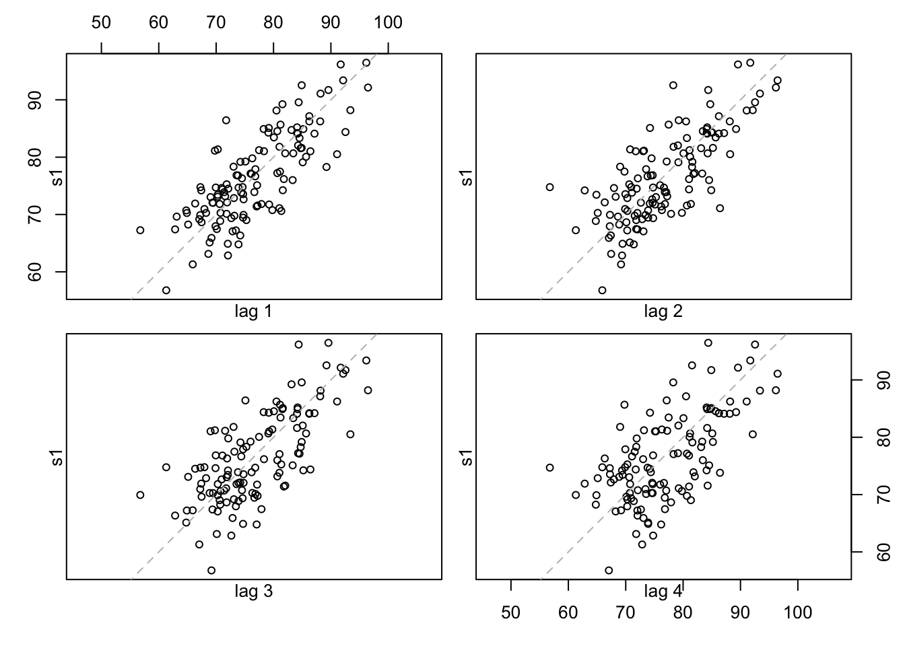
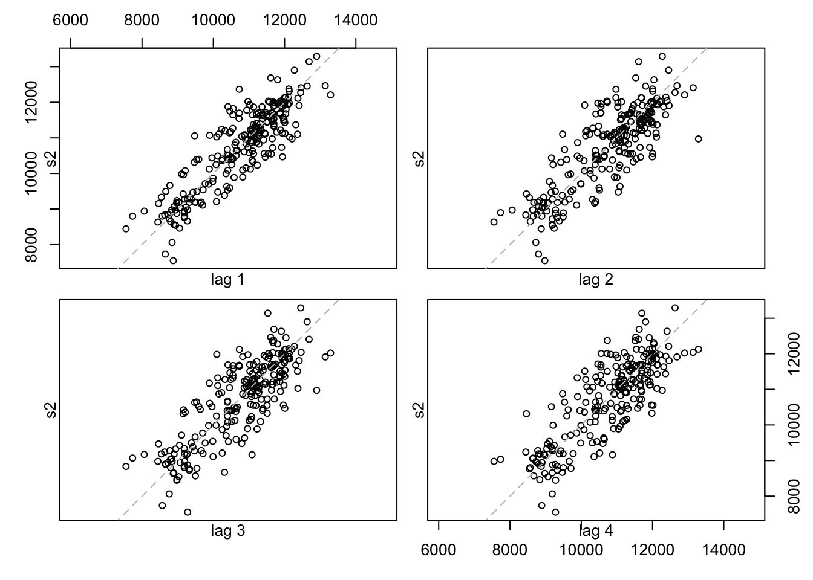
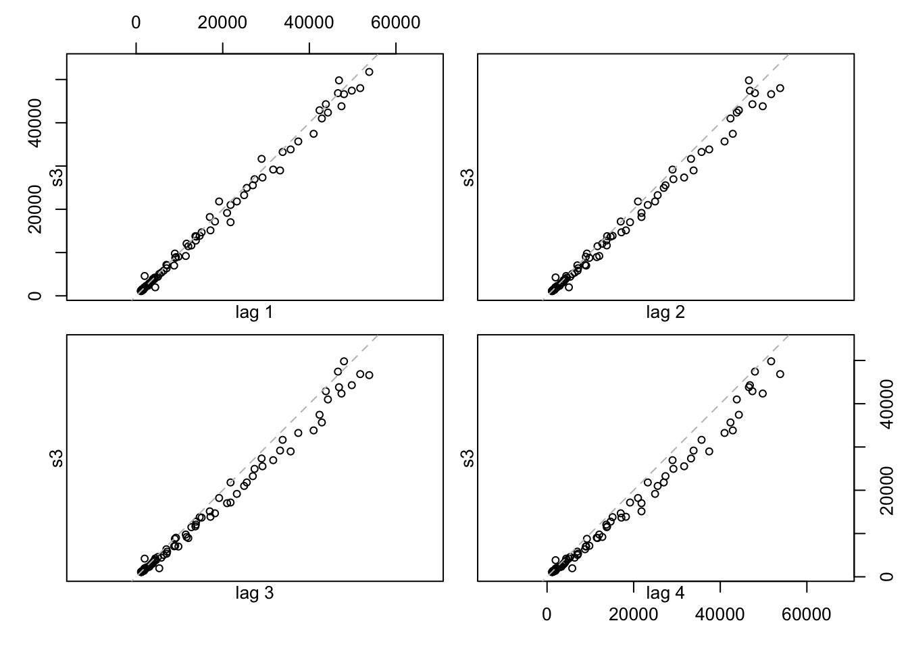
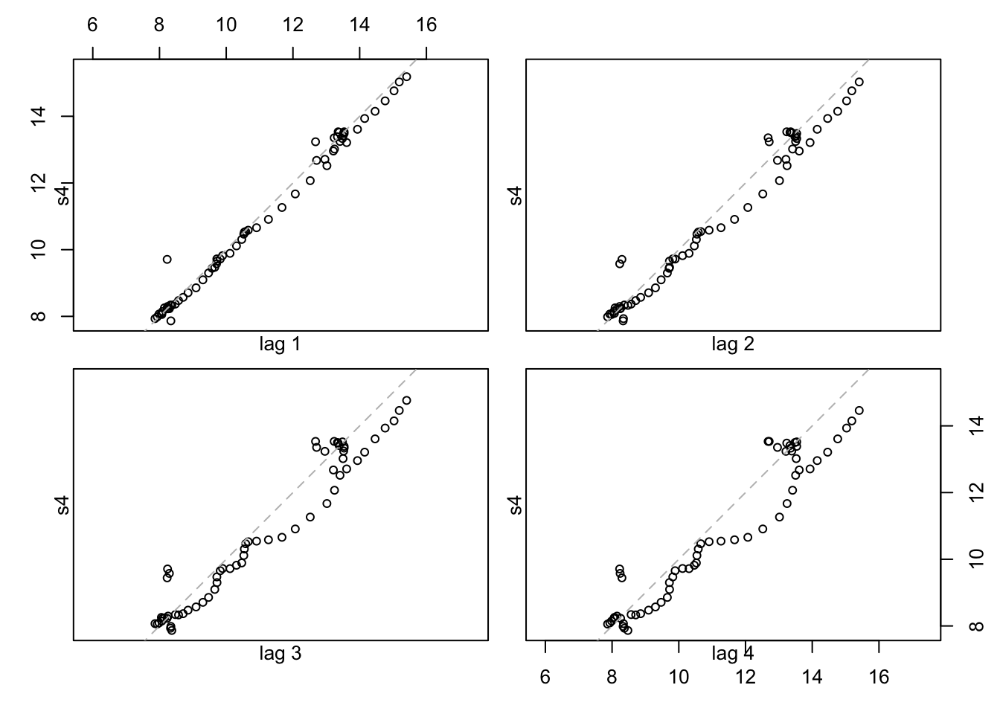
2.5.4 La boîte à moustache
La boîte à moustache (ou boxplot) est une représentation qui permet de repérer les valeurs atypiques de la série \(x_t\). Elle permet aussi d’avoir une idée sur la symetrie de la distribution quoique cette symetrie n’affirme pas la normalité. La boite est symetrique lorsque la mediane se situe au milieu de la boîte à moustache et qu’il y a symetrie des moustaches.
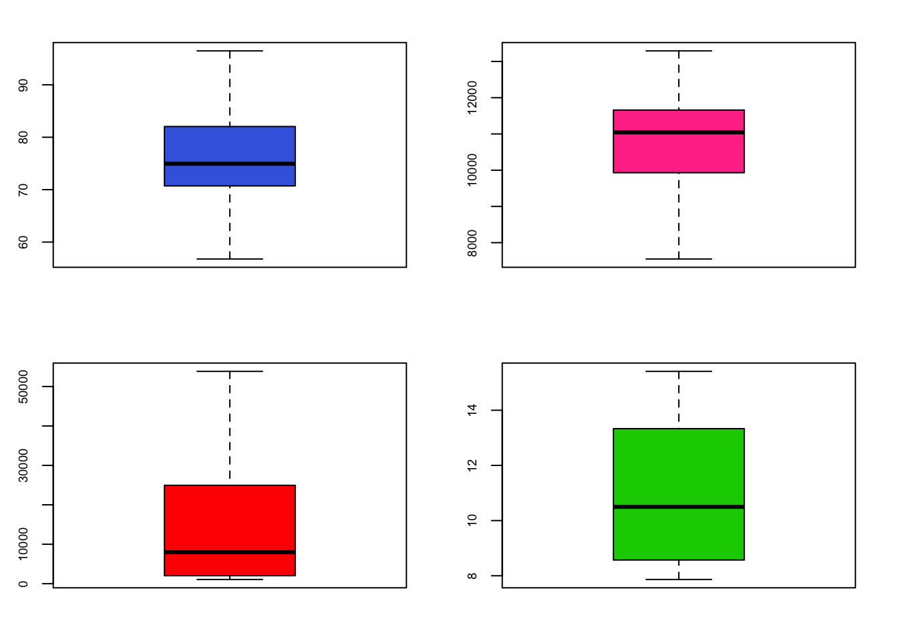
2.6 Structure ou caracteristiques
Une série temporelle \(x_t\) est caractérisée par une tendance, une saisonnalité et résidus.
2.6.1 La tendance
Une tendance (ou trend) est l’orientation à la hausse ou à la baisse des valeurs observées d’une série temporelle sur une periode assez longue. On note par \(m_t\). Une tendance est soit :
- locale ou globale :
- linéaire ou non linéaire :
2.6.2 La saisonnalité
La saisonnalité permet de détecter les éléments repetitifs sur les observations d’une série après une période. La répétition peut etre mensuelle ou hebdomadaire. On note par \(s_t\) la composante saisonnière d’une série.
2.6.3 Erreur (Le bruit)
Les 3 composants ci-dessus permet de decomposer la série \(x_t\) à un modèle additif : \[x_t = m_t+s_t+u_t\]
avec \(E(u_t)=0\), ou soit à un modèle multiplicatif :
\[x_t = m_ts_tu_t\]
avec \(E(u_t)=1\).
Avec le logiciel R, on peut décomposer la série avec la fonction decompose().
Pour la série \(s1\) on a :
m1 = decompose(s1, type = "additive")
par(mfrow = c(2,2), oma = c(0, 0, 0, 0), mar = c(2.5, 2.5, 2,2), cex.main = 0.8, cex.lab = 0.7, cex.axis = 0.7)
plot(m1$seasonal, col = "blue", ylab = "Saisonnalité")
plot(m1$trend, col = "orange", ylab = "Tendance")
plot(m1$random, col = "red", ylab = "Random")
plot(m1$x, col = "black", ylab = "Valeur")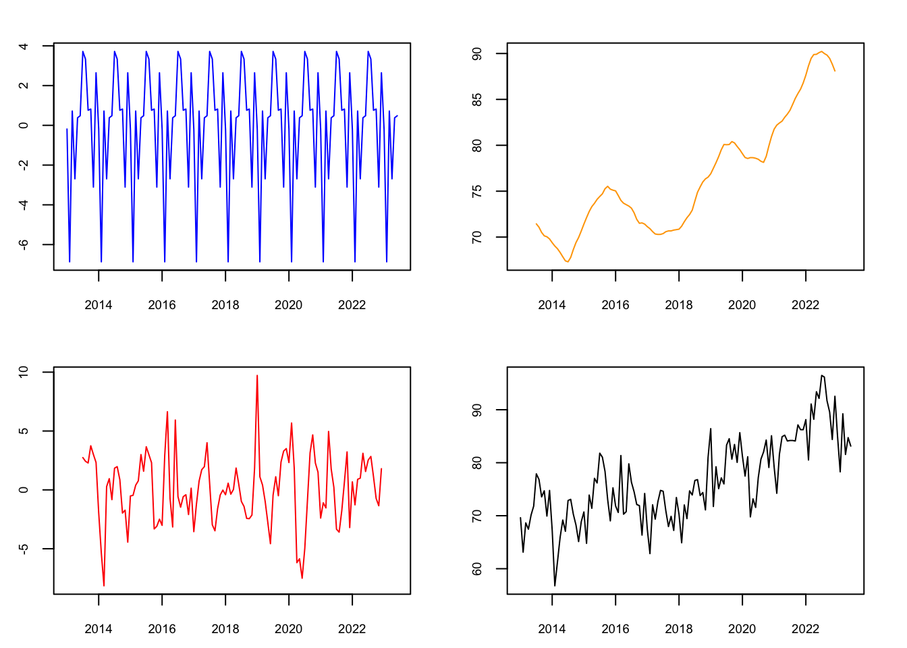
Pour la série \(s3\) on a :
m3 = decompose(s3, type = "multiplicative")
par(mfrow = c(2,2), oma = c(0, 0, 0, 0), mar = c(2.5, 2.5, 2,2), cex.main = 0.8, cex.lab = 0.7, cex.axis = 0.7)
plot(m3$seasonal, col = "blue", ylab = "Saisonnalité")
plot(m3$trend, col = "orange", ylab = "Tendance")
plot(m3$random, col = "red", ylab = "Random")
plot(m3$x, col = "black", ylab = "Valeur")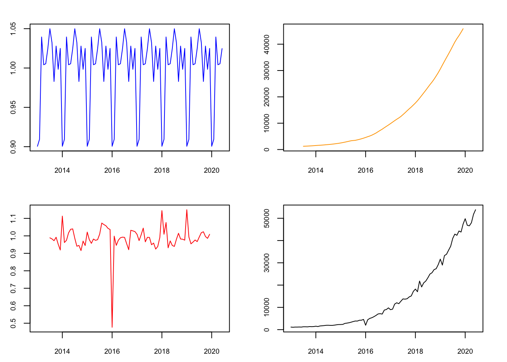
Pour la série \(s4\) on a :
m4 = decompose(s4, type = "additive")
par(mfrow = c(2,2), oma = c(0, 0, 0, 0), mar = c(2.5, 2.5, 2,2), cex.main = 0.8, cex.lab = 0.7, cex.axis = 0.7)
plot(m4$seasonal, col = "blue", ylab = "Saisonnalité")
plot(m4$trend, col = "orange", ylab = "Tendance")
plot(m4$random, col = "red", ylab = "Random")
plot(m4$x, col = "black", ylab = "Valeur")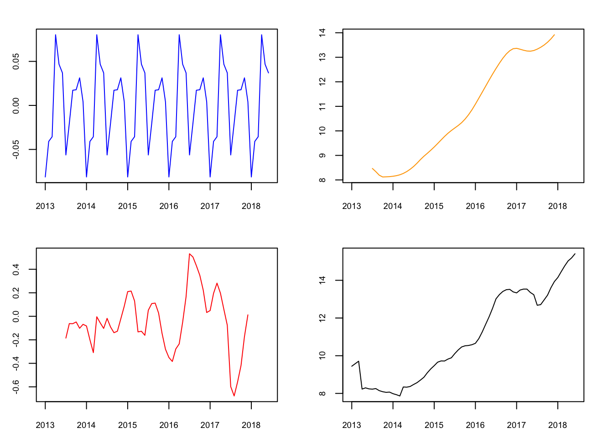
2.7 Etude de la normalité
2.7.1 Le diagramme Quantile-Quantile
Le diagramme Quantile-Quantile (ou QQ-Plot) est une représentation d’évaluer la pertinence de l’ajustement d’une distribution donnée à un modèle théorique. De ce fait, elle permet aussi de reconnaître un bruit blanc.
Plus les points se rapprochent de la droite, plus la distribution empirique est dite normale.
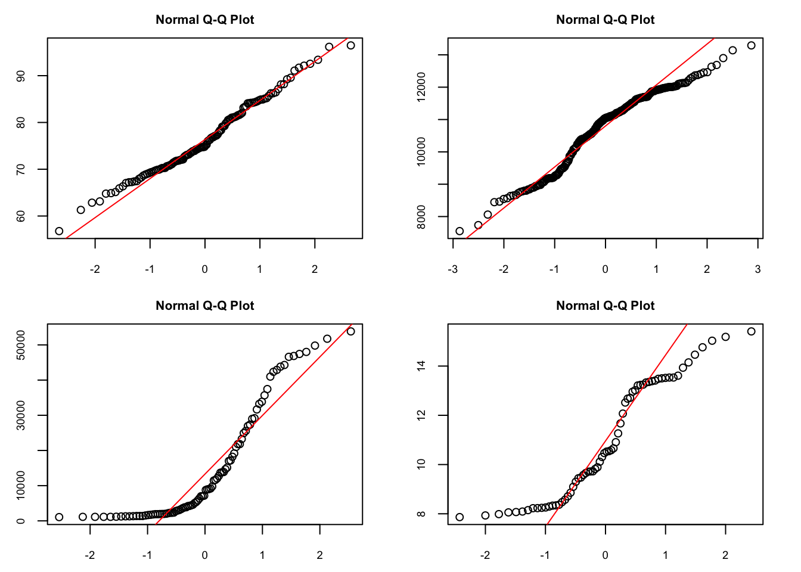
Interprétation :
par(mfrow = c(2,2), oma = c(0, 0, 0, 0), mar = c(2.5, 2.5, 2,2), cex.main = 0.8, cex.lab = 0.7, cex.axis = 0.7)
qqnorm(s4)
qqline(s4, col = "red")
qqnorm(s6)
qqline(s6, col = "red")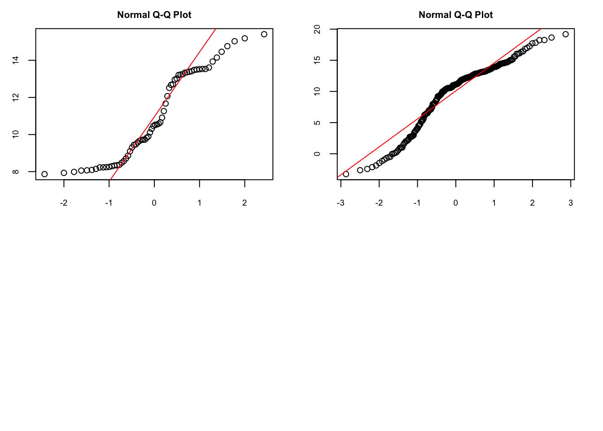
2.7.2 Test de normalité
2.7.2.1 Test de Shapiro-Wilk
Il est appliquable pour des échantillons allant jusqu’à 50 valeurs.
##
## Shapiro-Wilk normality test
##
## data: s1
## W = 0.98342, p-value = 0.1267##
## Shapiro-Wilk normality test
##
## data: s2
## W = 0.95935, p-value = 2.185e-06##
## Shapiro-Wilk normality test
##
## data: s3
## W = 0.81534, p-value = 3.025e-09##
## Shapiro-Wilk normality test
##
## data: s4
## W = 0.90233, p-value = 7.706e-05##
## Shapiro-Wilk normality test
##
## data: s6
## W = 0.92795, p-value = 2.001e-09A \(n=30\) (ddl), \(W_{0.05}\) vaut \(0.927\). On a ce qui suit :
Pour \(s1\), \(W_{obs} > W_{0,05}\), avec le p-value est superieur à \(0.05\), l’hypothèse de normalité est donc tolérée. C’est-à-dire les données suivent une distribution normale.
Pour \(s2\), \(W_{obs} > W_{0,05}\), avec le p-value est inférieur à \(0.05\), …..
Pour \(s3\) et \(s4\), \(W_{obs} < W_{0,05}\), avec les p-value toutes inférieures à \(0.05\), l’hypothse de normalité est donc rejetée. C’est-à-dire les données ne suivent pas une distribution normale.
2.7.2.2 Test de Kolmogorov-Smirnov
Le test de Kolmogorov-Smirnov permet de tester l’ajustement des données x à n’importe quelle loi, dont la loi normale. Il est intéressant d’opter pour ce test plutôt que celui de Shapiro-Wilk en cas de très grands échantillons.
## Warning in ks.test.default(s1, y = "pnorm", mean(s1), sd(s1)): ties should not
## be present for the Kolmogorov-Smirnov test##
## Asymptotic one-sample Kolmogorov-Smirnov test
##
## data: s1
## D = 0.092237, p-value = 0.234
## alternative hypothesis: two-sided##
## Asymptotic one-sample Kolmogorov-Smirnov test
##
## data: s2
## D = 0.10765, p-value = 0.007001
## alternative hypothesis: two-sided## Warning in ks.test.default(s3, y = "pnorm", mean(s3), sd(s3)): ties should not
## be present for the Kolmogorov-Smirnov test##
## Asymptotic one-sample Kolmogorov-Smirnov test
##
## data: s3
## D = 0.18943, p-value = 0.003133
## alternative hypothesis: two-sided##
## Exact one-sample Kolmogorov-Smirnov test
##
## data: s4
## D = 0.13672, p-value = 0.1544
## alternative hypothesis: two-sided##
## Asymptotic one-sample Kolmogorov-Smirnov test
##
## data: s6
## D = 0.14847, p-value = 5.078e-05
## alternative hypothesis: two-sidedPour \(D_{0.05} = 0.240\), (pour n = 30) :
- Si \(D_{max} < D_{0.05}\), l’\(H_0\) est tolérée: la distribution empirique semble correspondre à une distribution normale.
- Si \(D_{max} > D_{0.05}\), l’\(H_0\) est rejetée: la distribution empirique ne provient pas d’une distribution normale.
Ainsi, avec ce test, on tolère l’hypothèse \(H_0\), les distributions des séries semblent correspondre à une distribution normale.
## Registered S3 method overwritten by 'quantmod':
## method from
## as.zoo.data.frame zoo##
## Jarque Bera Test
##
## data: s1
## X-squared = 2.5722, df = 2, p-value = 0.2763##
## Jarque Bera Test
##
## data: s2
## X-squared = 12.704, df = 2, p-value = 0.001743##
## Jarque Bera Test
##
## data: s3
## X-squared = 16.309, df = 2, p-value = 0.0002875##
## Jarque Bera Test
##
## data: s4
## X-squared = 5.9302, df = 2, p-value = 0.05156##
## Jarque Bera Test
##
## data: s6
## X-squared = 26.902, df = 2, p-value = 1.44e-062.8 Test d’indépendance
On peut utiliser la fonction Box.test() pour examiner l’hypothèse nulle d’indépendance dans une série temporelle donnée.
##
## Box-Ljung test
##
## data: s1
## X-squared = 79.334, df = 1, p-value < 2.2e-16##
## Box-Ljung test
##
## data: s1
## X-squared = 149.46, df = 2, p-value < 2.2e-16##
## Box-Ljung test
##
## data: s1
## X-squared = 212.03, df = 3, p-value < 2.2e-162.9 Performances d’une série temporelle
Dans les domaines de finance, de comptabilité ou de marketing opérationnel, les experts suivent au quotidien l’évolution de leurs activités en comparant à chaque fois les résultats d’une date (ou d’une période) par rapport à une date (ou une période) antérieure, par rapport aux résultats du marché global ou par rapport aux résultats de leurs concurrents directs. On parle là de concept de performance.
2.9.1 La performance Year-to-date
La performance Year-To-Date conrespond au résultat cumulé commençant le premier jour de l’année civile ou de l’exercice en cours jusqu’à la date actuelle, \[YTD_x = \sum_{t=1}^{k} x_{t}\]
\(x_1\) correspond à la valeur de la série au 1er janvier, et \(x_k\) à la valeur de la série à la date actuelle.
2.9.2 La performance Month-to-date
La performance Month-To-Date conrespond au résultat cumulé commençant le premier jour du mois en cours jusqu’à la date actuelle au cours du même mois, \[MTD_x = \sum_{t=1}^{k} x_{t}\]
\(x_1\) correspond à la valeur de la série au 1er jour du mois, et \(x_k\) à la valeur de la série à la date actuelle au cours du même mois.
2.9.3 La performance Quater-to-date
La performance Quater-To-Date conrespond au résultat cumulé commençant le permier jour du trimestre jusqu’à la date actuelle au cours du même trimestre. \[QTD_x = \sum_{t=1}^{k} x_{t}\]
\(x_1\) correspond à la valeur de la série au 1er jour du trimestre, et \(x_k\) à la valeur de la série à la date actuelle au cours du même trimestre.
2.9.4 La performance Week-to-date
La performance Week-To-Date conrespond au résultat cumulé commençant le permier jour de la semaine jusqu’à la date actuelle au cours de la même semaine. \[WTD_x = \sum_{t=1}^{k} x_{t}\]
\(x_1\) correspond à la valeur de la série au 1er jour de la semaine, et \(x_k\) à la valeur de la série à la date actuelle au cours de la même semaine.
Données simulées↩︎